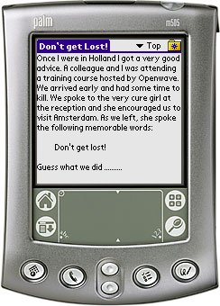

Yadr ("Yet Another Document Reader") is used to read the popular DOC format on your Palm Handheld. Currently Yadr only supports the Doc format, but support for other formats are planned.
Yadr can read documents in both memory or on a MMC card (only the first card detected). Other highlights of Yadr are: bookmarks and customization of fonts, colors etc.
Note! Yadr cannot be used to read Microsoft Word .doc documents on your handheld. To read Word documents use something like Documents to Go from Dataviz.
You can support this project by donating any amount to my Pay Pal account.
v1.10 (2005-10-13) Yadr now supports full screen mode. v1.9 (2005-10-11) Supports the sysAppLaunchCmdOpenDB launch code which is sent by f.ex. zLauncher when a Document should be opened. v1.8 (2005-10-09) When opening large documents show a "Please Wait" sign. v1.7 (2005-10-08) Find implemented. v1.6 (2005-10-06) Fixed a bug where the handheld would crash when exiting the Formatting screen. Minor draw operations changed so it works better on Visors. v1.5 (2005-10-03) Documents can now be deleted, renamed and beamed. Fixed some minor bugs. v1.4 (2005-09-29) Documents created by Pilot Install can now be read. The documents created by Pilot Install contains an erroneous header. Changed the preferences screen in the reader to "Formatting". Added History option. Added Preferences screen. v1.3 (2005-09-25) Another day, another bug fix. It is now again possible to scroll up in a document ... (Brian takes out his head from the brown paper bag). v1.2 (2005-09-24) Changed "Screen Control" to "Page Control". Fixed various bugs which made the handheld bomb on various documents. When selecting "Top" from the drop down actually go to the start of the document. v1.1 (2005-09-22) Fixed a bug where the "Up" button on the documents list would dissappear when there was no documents. Added the Line Spacing option. v1.0 (2005-09-19) First public release.